BI（Business Intelligence）即商务智能，它是一套完整的解决方案，用来将企业中现有的数据进行有效的整合，快速准确的提供报表并提出决策依据，帮助企业做出明智的业务经营决策。
本文目录:
-开篇
回想起来在工作中做商务智能这一块已经有六七个年头了，虽然平时接触的商务智能产品相对单一，但是并不影响对商务智能的理解，产品毕竟只是实现需求的一种工具，而对根据客户的需求给出合理的实现方法，并将其组织成可行的方案才是更有价值的。
刚毕业那会家人问起来我的工作内容还是相对容易介绍和解释的，就是地地道道一程序员嘛，后来又叫程序猿也叫码农，形象地阐释了这一行女人当男人用，男人当畜生用的工作强度，幸运的是我的第一份工作单位是一个非常靠谱的甲方公司，当时所谓的靠谱就是指新人也有很好的学习进步空间，同时工作强度也并不是非常的过份，几乎没有加班，当然薪水也还凑合。就这样两年之后就有机会接触到了SAP的商务智能工具Business Warehouse， 从此开始一直从事相关的工作至今，其间转做过乙方，过过两年空中飞人到处出差的日子，随之又回到甲方安安稳稳的上班。到现在家人老同学老朋友估计都很难清楚的知道我到底是做一份什么样的工作，只知道我是做IT的。
那么今天就让我来谈谈我所理解的商务智能吧，下面文章的难度基本上是扫盲级别的，不会有太多难理解的技术文字，力求通俗易懂，当然个人能力还是很有局限，如有不对之处欢迎批评指正。
-什么是商务智能(Business Intelligence)
-字面意思
既然是商务的那么一般就是企业、单位里用的东西，而不是一般小老百姓用的。后面加上智能两个字就稍微有一点费解了，其实也可以从字面上先解释 一下。智就是聪明的意思，能么就是能力，企业聪明了以后就有能力干什么呢？最容易想到的就是能赚更多的钱，有更好的效益，然后么对于员工来说工资福利 啥的就有希望更好一点。所以说商务智能就是一个能让企业变得更聪明从而赚得更多的东西，这么说应该都能理解吧。
-专业解释
说了字面意思之后我们再来看看专业解释(出自度娘)：
BI（Business Intelligence）即商务智能，它是一套完整的解决方案，用来将企业中现有的数据进行有效的整合，快速准确的提供报表并提出决策依据，帮助企业做出明智的业务经营决策。
可以看出专业的解释和从字面上直接理解的并没有很大的差异，我这里再把其中最重要的三个词列一下方便理解：数据、报表、决策。所以到这里就基本可以说明什么是商务智能了，说白了就是将企业里日常运营所产生的各种数据都整理成报表的形式展现给公司管理人员做分析决策的一整套解决方案，有些地方还可以狭义的理解为一些相关的数据管理软件和报表工具。
-你看到的商务智能结果
作为一名企业的普通职员，你可能来自商场部，销售部，采购部，生产制造部，财务部等等，你的日常工作中就会产生和录入各种数据，从开展一次市场营销活动需要制定预算，到录入商机，给有意向的客户开出报价单，到客户确认下单位后生成和录入销售订单，随后或许转成工单下达至生产部门，生产部门再查看成品、原材料、半成品库存，或许有不够的物料需要进行采购，然后上线生产，成品出库，发货，开票到最终财务结账。这样一整套业务流程下来到处都产生同时也需要数据。于是你或许看到了一些类似下面这样简单格式的报表数据:
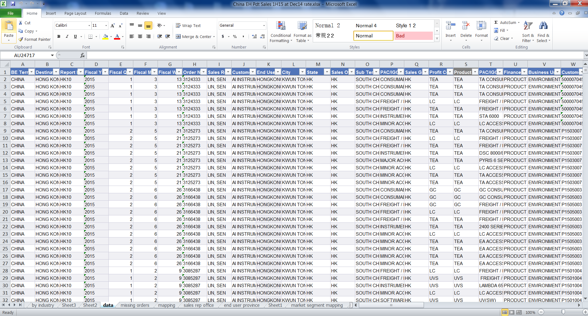
(图片来源: 自己日常接触到的业务部门的基础数据)
如果有更直观的数据展现工具，你所看到的或许又是类似下面这样的图表:
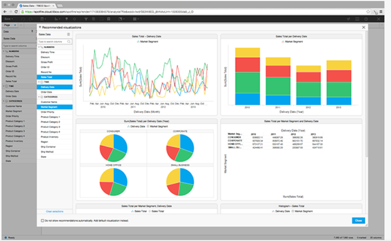
(图片来源: Spotfire官网 – 一款强大的数据分析工具)
可以说以上的Excel格式的报表和丰富的图表分析都是目前我所看到企业业务人员日常接触最多商务智能，因为有报表的地方就有数据整合，有报表的地方就能提供决策支持。
-我看到的商务智能
作为IT人员，在给出商务智能解决方案上要做到的正是将平常业务人员大量的手工数据收集与整合操作通过计算机软件系统进行实现，从而达到商务智能快速准确的要求，将人从琐碎的数据收集与整合工作中解脱出来，专注于分析与决策工作。因而我所看到的商务智能是类似下面这样的:
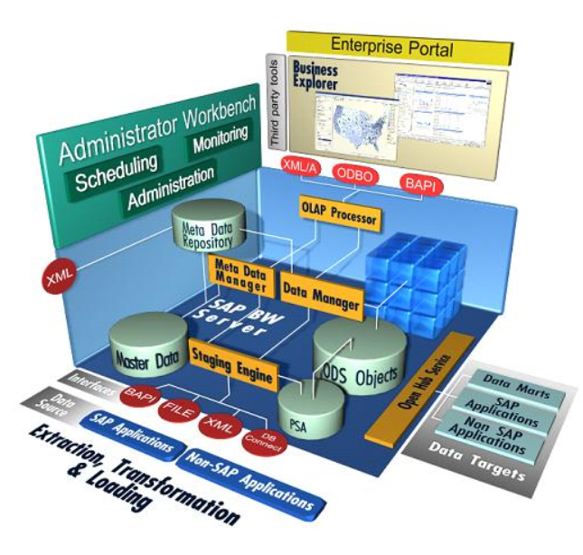
(图片来源: 百度搜索BI架构挑选了一个相对清晰完整的SAP的BI架构)
具体图片里面的环节在这里就先不多做介绍了，下文在介绍“商务智能是怎么实现的”时候会涉及到图片里的一些内容。这张架构图基本涵盖了我日常工作的技术内容，所以我所看到的商务智能就是通过类似这样一种技术上的层层搭建实现的一个完善的商务智能软件系统平台，以及帮助企业实现这样一个平台的完整过程。
-为什么需要商务智能
当我分析为什么需要一样东西的时候，一般来说首先要看一看这个东西是不是好的，好的定义一般来说就是这个东西是不是能够消除消极的结果(对于企业比如降低成本)，和带来积极的结果(对于企业比如增加收入)，然后还有一点就是可以看看这个东西其他人是不是也是认为是好的而且也在使用。
-是不是好东西？
从上文“什么是商务智能”中可以顺理成章的得到第一个直接的回答，商务智能可以让企业变得更聪明从而能赚更多的钱，这就是一个最朴素也是最好的回答，有这样的一个理由有的时候就够了。那么具体好在哪里呢，我们接着往下看。
没有实施商务智能的企业往往会有如下困扰：
* 大量的业务数据的产生，收集和存储需要投入大量的人力有时候已经超越了人工能够处理的极限。
* 还有很多有价值的信息被掩盖在这些大量的业务数据之中无法很好的挖掘。
* 管理层很难实时准确的掌握最新的运营状态，从而无法及时的作出正确决策。
而实施了商务智能的企业可以通过商务智能提供的类似以下的一些解决方案成功的搞定上述困扰：
* 销售管理智能
* 订单分析
* 销售分析
* 促销分析
* 客户交易量分析
* 客户管理智能
* 客户服务分析
* 潜在客户分析
* 客户投诉与意见分析
* 售后服务分析
* 物料管理智能
* 库龄分析
* 库存分析
* 物料品质分析
* 财务管理智能
* 财报分析
* 主要经营指标分析
* 成本分析
* 生产管理智能
* 产能分析
* 生产效率分析
* 生产品质分析
* 人事管理智能
* 人力分析
* 薪资分析
* 考勤分析
* 培训分析
-案例：四川烟草的商务智能成功案例
在这里我稍微罗列几张别人家的成功实施的商务智能系统的效果图来直观的感受一下商务智能是如何让企业变得更聪明的。(信息来源: 之前工作中收集的SAP BO打单资料)
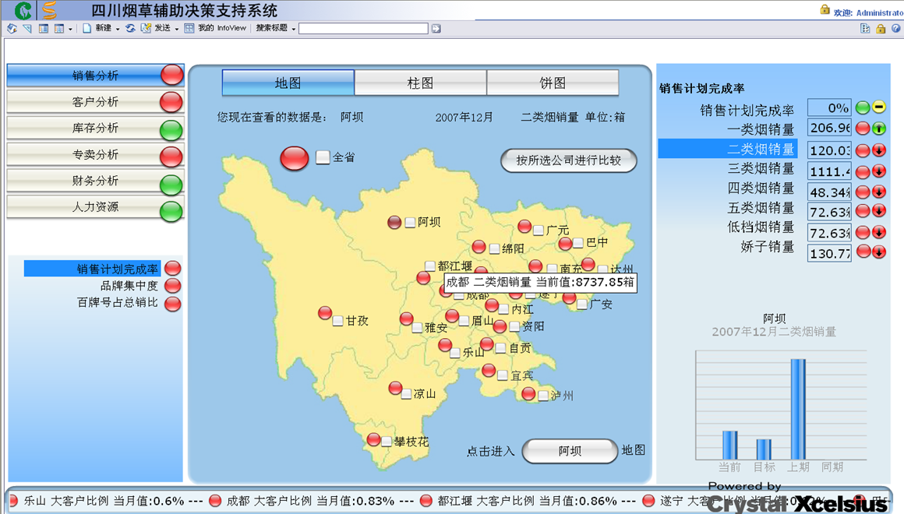
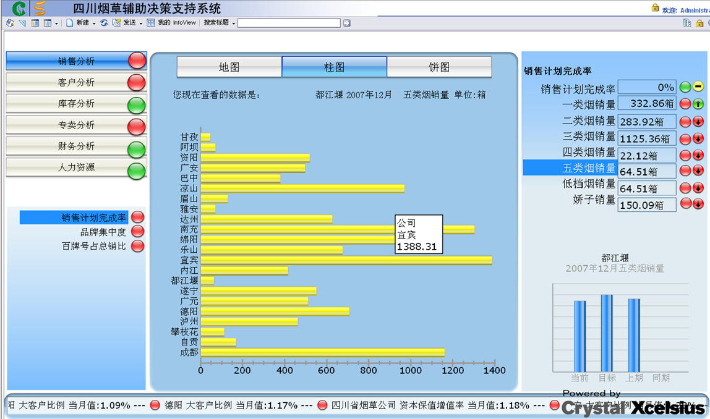
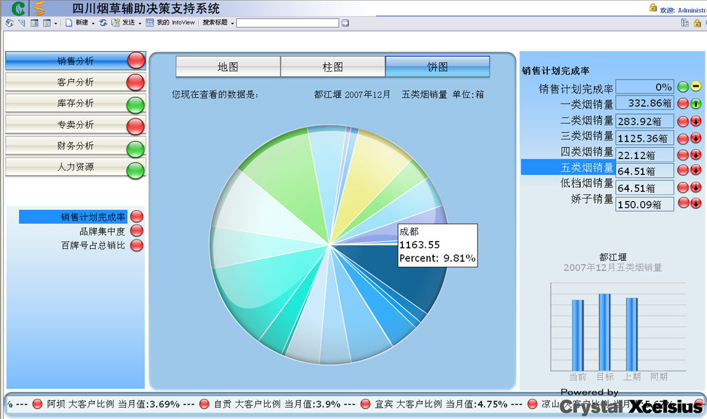
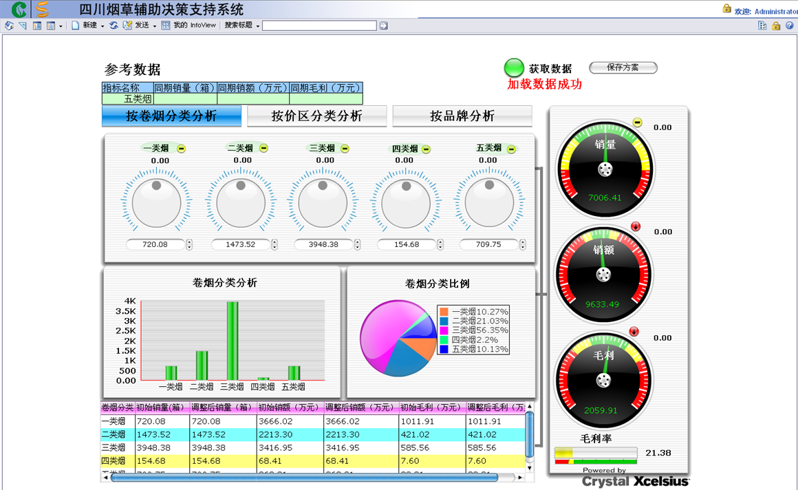
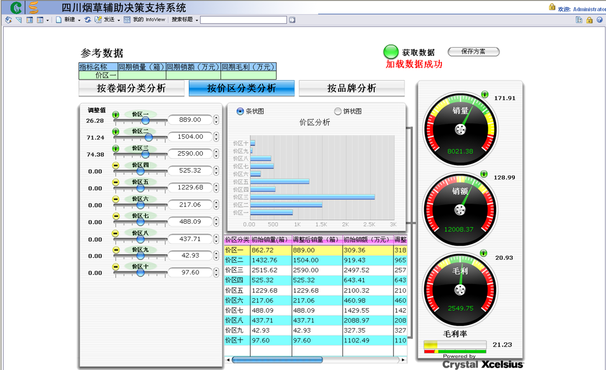
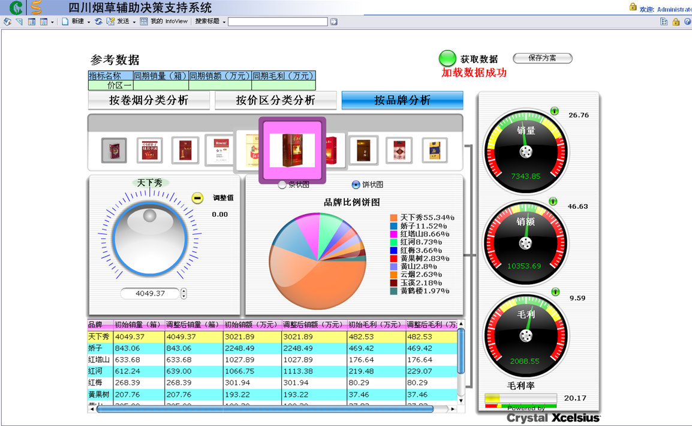
通过上面这样的报表和图表，管理人员日常经营所需要的一些信息可谓是一目了然。
–别人家是不是有在用呢？
平时生活里在做选择和判断一个东西是不是好的，自己是不是需要的时候，自己一个人的判断往往还不是很有底气，这个时候就要抬头看看外面的世界，别人是不是也在用这个东西也在说它好。于是我找来下面两张图(信息来源: 依旧是早年的BO打单资料)，看看有多少企业都已经成功的实施了商务智能了呢？
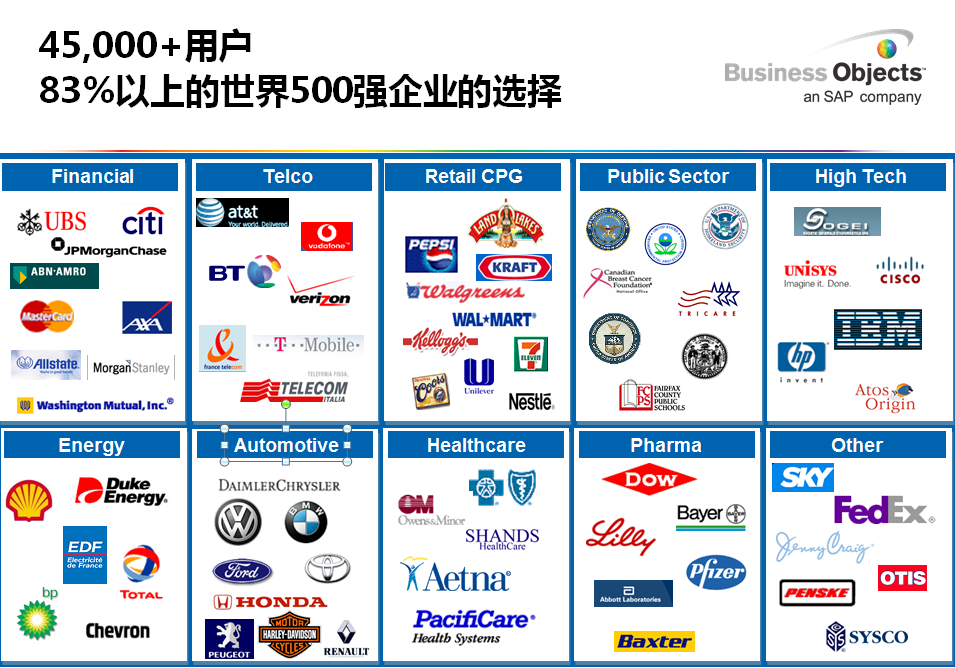
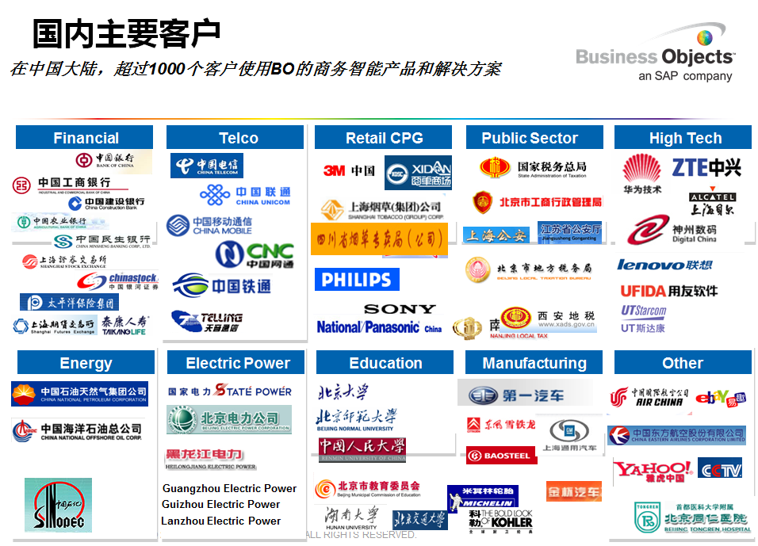
这些虽然已经是几年前的而且只是SAP一家商务智能厂商所提供的数据，但是应该也已经可以看出一些结论了吧。
-商务智能是怎么实现的
如果需要系统的介绍商务智能的实现，估计可以开个培训班然后讲上好几天的课。这里只是做一个简单的介绍，争取重要的知识点都可以讲到并通俗的解释。
-联机事务处理OLTP（on-line transaction processing）、联机分析处理OLAP（On-Line Analytical Processing）
如今的日常工作或生活中或多或少都会接触一些电脑系统，即使最常见的在商场买东西，服务员也需要将商品扫一下然后再给你开单，有时候你想买的样式没货了还可以要帮你查一查别的门店是不是有货。那么如何分清OLTP和OLAP呢，在刚刚这个商场购物的简单例子里，服务员扫描商品给你开单这个动作所使用的可以说就是OLTP，因为扫完商品你买单后服务员所使用的电脑系统会生成相应的订单，并进行后续的一系列出货，开票，扣减库存操作，就些操作就是联机事务的处理。而后面帮你查看库存是否可以从别的门店调货基本可以算作是OLAT，联机分析处理，分析你想要购买的商品是否仍有库存。为什么要搞清楚OLTP和OLAP呢，那就是因为接下来商务智能主要涉及的系统是OLAP，就可以从思想上彻底的把商务智能系统和平时工作中所用到的那些个事务处理系统区别开了。
专业的OLTP和OLAP解释：
当今的数据处理大致可以分成两大类：联机事务处理OLTP（on-line transaction processing）、联机分析处理OLAP（On-Line Analytical Processing）。OLTP是传统的关系型数据库的主要应用，主要是基本的、日常的事务处理，例如银行交易。OLAP是数据仓库系统的主要应用，支持复杂的分析操作，侧重决策支持，并且提供直观易懂的查询结果.
-ETL(Extract-Transform-Load)
理解了商务智能系统是一个联机分析处理系统主要是用于支持数据的分析操作的，那么接下来就需要了解的是ETL，数据的抽取、转换和加载。说数据的抽取、转换和加载有一点点的抽象，让我换一个说法。实际上ETL要处理的事情就是数据从哪里来的要到哪里去，在这个数据来来去去的过程中数据有哪些变化，比如汇总啦，数据之间的对映关系啦啥的。
专业的ETL说明：
ETL是构建数据仓库的重要一环，用户从数据源抽取出所需的数据，经过数据清洗,最终按照预先定义好的数据仓库模型，将数据加载到数据仓库中去。
-数据库和数据仓库
在介绍上面两个概念的时候出现的数据库和数据仓库很多人搞不清楚他们两个的区别，这里简要的说明一下。数据库的设计一般是面向事务处理的，所以一般的关系型数据库设计时要避免数据冗余，还要采用一些标准的范式，而数据仓库的设计往往需要冗余来支付分析处理(空间换时间)，数据库一般存放一些实时数据而数据仓库大多用来存放一定时间的历史数据。这也可以看出来为什么需要有ETL的过程来将数据存放到数据仓库中。另外一点就是数据仓库的设计往往是面向对应的主题的，可以按照系统的模块进行相应的设置，比如销售管理系统对应数据仓库里的销售分析模型，库存管理系统对应库存分析模型等等。
在大致了解了以上几个基本概念以后，我们再来看看一个完整的商务智能系统是如何实现的。
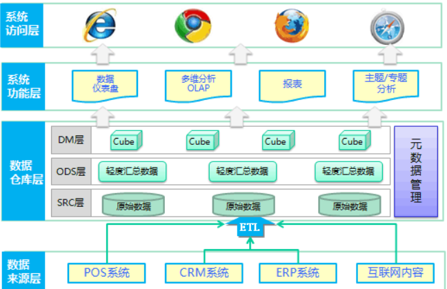
(图片来源:度娘搜索BI架构挑选了一个比较完整又简单的)
本来想自己画一个商务智能的架构图的，小小的偷懒了一下，网上找了一个能充分说明实现过程的图来解释一下，这张图我们需要从下往上看。
既然是和数据打交道，那么首先数据从哪里来？于是我们有了数据来源，是各种各样的外部系统，比如图上的POS(销售网点)系统，CRM(客户关系管理)系统，ERP(企业资源规划)系统等等，这些都是联机事务处理系统(OLTP)，他们的数据都存储于实时的后台数据库中。有了上面的知识点介绍这里就应该很容易理解了吧。
接下来是ETL出场了，我们需要从这些存储了数据的事务处理系统将数据通过ETL的过程加载到数据仓库中去，通过ETL就能实现。
然后来到了图中的数据仓库层，这里我们不作太详细的介绍，只需要知道里面原始数据指的就是从数据来源通过ETL过程直接载入的数据，而ODS层就是将数据进行一些简单的汇总而形成的数据临时存放区域，比如把销售订单的抬头数据和订单的行项目数据汇总到一起。而Cube层就是根据各个分析主题而设计的数据模型了。在这里也充分的体现了数据仓库设计时需要数据冗余的部分。
再往上来到了系统功能和系统访问层，这两层我们其实可以统一叫作数据展现层，也就是把在数据仓库里根据主题定义好的数据模型里的数据通过报表或图表的形式给用户展现出来，就是上文中你说看到的商务智能结果也就是案例中四川烟草辅助决策支持系统那几张图片的结果。
我想讲到这里对于商务智能是怎么样实现的应该有一个简单的了解了吧，下面再展开介绍一下商务智能应用的几个阶段或叫层次。
–商务智能应用的几个层次
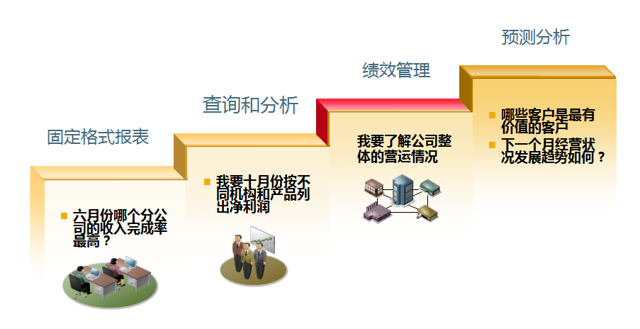
(图片来源: 之前的BO打单资料)
这张图一直刻在我心里，是一张很有用的图。在给客户实施商务智能的时候我最喜欢介绍的就是这张图。通过设定业务问题与场景的形式，清晰明白的说明了商务智能应用的几个阶段。
目前国外很多公司已经实施到了中端BI，也叫作数据分析阶段，也就是这张图的中间两个台阶，有少数公司已经有了高端BI的应用，也叫数据挖掘，图上最高一个台阶的预测分析就属于数据挖掘的一部分，而国内大多商务智能的客户还都停留在报表阶段，因此可以看出商务智能在国内的实施还有很大潜力，加上大数据和云计算的引入，商务智能的应用前景应该算是比较开阔的。
-结尾
总算顺着what-why-how的顺序把我自己对商务智能的一点简单的理解说完了，正好自己也回顾一下这些知识点，同时也希望这些内容对一些人有一点帮助。
在结束之前再简单的谈谈数据科学家吧。第一次听说这个词是去年年中的时候，新加波的IT总监和我聊到职业规划的时候提到了data scientist， 说这是一个不错的发展前景，国外包括美国、新加波在内的一些发达国家都很需要这方面的人才，让我可以留意留意。我一听当时就觉得这真的是一个很好的主意， 小时候那个长大要做科学家的梦想貌似看到了实现的方法，数据科学家! 之后花了一些时间研究了，也特别的开了一个叫”我是数据科学家”的独立博客(http://www.iamds.com/) 用于记录平时的学习与成长，基本上是竖立了自己接下来的发展目标。之前的这些商务智能工作经验和成为一名数据科学家所需要的知识背景是相关的，所欠缺的知 识还有统计学，机器学习，文本数据挖掘等等，相信一点点的积累和努力，在不久的将来可以真正的介绍自己的时候说我是数据科学家。